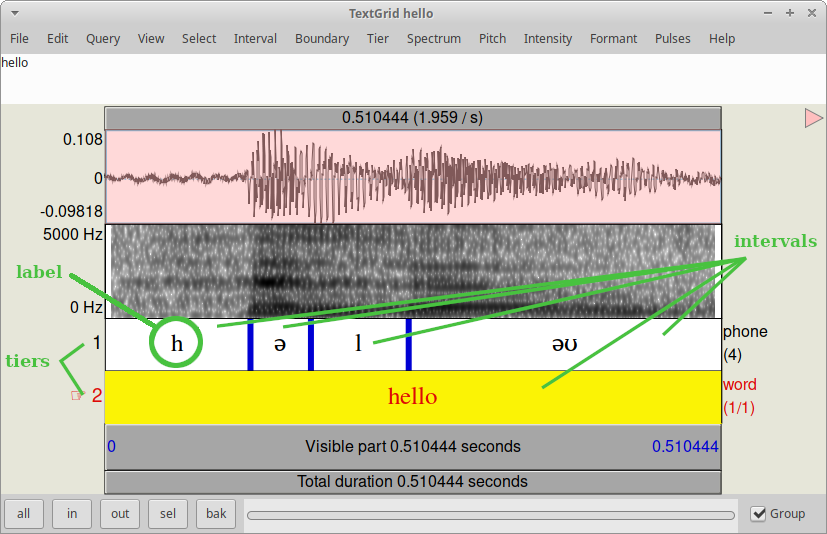
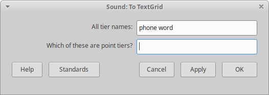
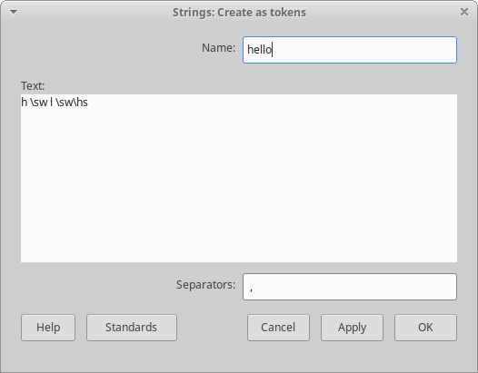

Week 6: Annotation I
1 The TextGrid object
Let's recall that Praat allows you to annotate your Sound files. That is, if you have a recording of a person saying "hello" and you want to mark exactly where the /ə/ sound starts and ends, you can do so with a TextGrid. A TextGrid is a type of Object that allows you to assign a tag (e.g. a word, an IPA symbol, a syllable... Praat calls them interval labels) to a given point in your Sound file.
Furthermore, you can add more than one layer (Praat calls them Tiers) to your TextGrid. While you can easily tag at a broader level (say, words) just by listening, doing more fine-grained analysis (for instance, VOT, duration, etc.) requires that you learn the contents from weeks 3 and 4: this way you can align a given tag by looking at the spectrogram while you listen.
2 Creating a TextGrid
When you select a Sound file, the Objects window will show you the option Annotate, from which you can select To TextGrid. After that, you will get a somewhat confusing window where you have to input the names of your tiers, and state which one of the above are Point tiers. You will need a point tier if you want to pinpoint something very specific (e.g. to make tone annotations) instead of getting the duration and time stamps of a certain interval of time. The picture above shows you the window in question, where we added two tiers (the number of tiers is implicit in the two names you are entering here), one called phone and the other phone.
This can be done by clicking, but you can also script it. By default, the name of the TextGrid object will be the same as the name of the Sound object, so no need to worry about that.
selectObject: "Sound hello"
mytg=To TextGrid: "word phone", ""
endforQuick exercise: Create a script that opens the file soles.wav from the folder palabras, and creates a TextGrid with four tiers, named phone, syllable, word, language.
3 Adding boundaries to your TextGrid
When you create a TextGrid with the lines shown above, you will get a TextGrid with one interval per tier. In order to create more intervals, you need to add boundaries to each tier. Now, you can do so by using the View and Edit window and clicking where you want your boundaries to be, but you can also script it. Let's take the case of Sound hello, which is 0.51 ms long. We can add a boundary on Tier 1 at 0.1 seconds, then a second one at 0.2, and a third one at 0.3 (we can adjust them later so that they fit with the sound):
selectObject: mytg
Insert boundary: 1, 0.01
Insert boundary: 1, 0.02
Insert boundary: 1, 0.03But adding boundaries this way is not very smart. However, we can get the total duration of our Sound file and then create a for-loop that sets boundaries within the duration of the Sound. For instance, we know that we want four intervals for Sound hello's Tier 1 (that is, three boundaries):
selectObject: mytg
tgdur= Get total duration
for i to 3
Insert boundary: 1, (tgdur/4) *i ; this line adds one boundary every tgdur/4 (that is, 0.51/4 = 0.12)
endforNow we can adjust the boundaries manually. Granted, you still need to do this by using your mouse and clicking, but at least it saves you a couple of clicks (it will save you A LOT of clicks as your Sound files get longer).
Quick exercise: Create a script that modifies your TextGrid soles by adding four boundaries to Tier 1, and one boundary to Tier 2.
4 Adding labels to your TextGrid
Again, you can add labels by using the View and Edit window. However, this is also possible to do via scripting. Let's add the "h" to interval 1 on Tier 1 of Sound hello:
selectObject: mytg
Set interval text: 1, 1, "h"But, is there a way to feed my TextGrid with the labels I want? Here is when the (in)famous Strings list may come in handy. We can create a Strings list from scratch by going to New > Generics > Strings > Create Strings from tokens, where we give our Strings list a name and we input the strings that conform our labels. Like so:
This can be done with the following line:
Create Strings from tokens: "hello", "h \sw l \sw\hs", " ,"CAUTION - VORSICHT - CUIDADO - ATTENZIONE - ATTENTION - DIKKAT - VARÚÐ- OPREZ - VAROITUS
Some Praat versions have a different command for creating Strings lists. In these versions, all Strings lists have the name tokens as a default and you cannot change it; if you try the "point-and-click" method, the dialogue window only gives you a text field to input the tags and another one for the separator. If you have such Praat versions, you will need to use the following line:
mylist1 = Create Strings as tokens: "h \sw l \sw\hs", " ,"Additionally, you will see that this line stores your Strings list's ID number as a numeric variable. This is because if you are creating more than one Strings list and both are called tokens, you won't be able to tell them apart if you refer to them by their names.
Quick exercise: Create a script with two Strings lists: one with the labels for Tier 1, and another with the labels for Tier 2. Tier 2 is for the syllable structure, which in this word is so-les. Thus, your labels will be CV and CVC.
Now comes the interesting part: We make a for-loop that iterates through the strings in our Strings list and fills in the TextGrid with them.
selectObject: "Strings hello"
n= Get number of strings
for i to n
label$= Get string: i
selectObject: mytg ; Don't forget to select the tg
Set interval text: 1, i, label$ ; this line says: on tier 1, interval i, add the label corresponding to i
selectObject: "Strings hello" ; And don't forget to get back to your list
endforNow check your TextGrid: the intervals will be labeled with the strings from the Strings list.
Quick exercise: Create a script that feeds both Strings lists from the previous exercise to your TextGrid soles. After this, you may adjust the boundaries so they match with the Sound file.
5 Homework
Download the file seizure.wav here (you can also find it on ILIAS). Create a script that: (a) Opens the file; (b) Creates a TextGrid with two tiers (word and phone); (c) Adds the corresponding intervals; and (d) Adds labels to both tiers. For those who like challenges, you can create a small follow-up script that (e) Gets the start and end times plus duration of each fricative and (f) Puts these values in a Table object. Upload your script to ILIAS as usual.